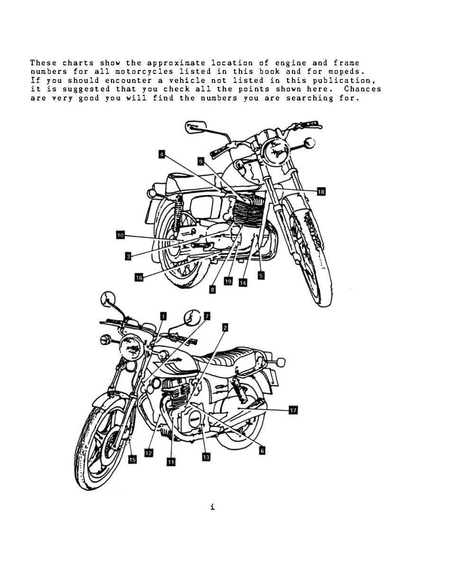
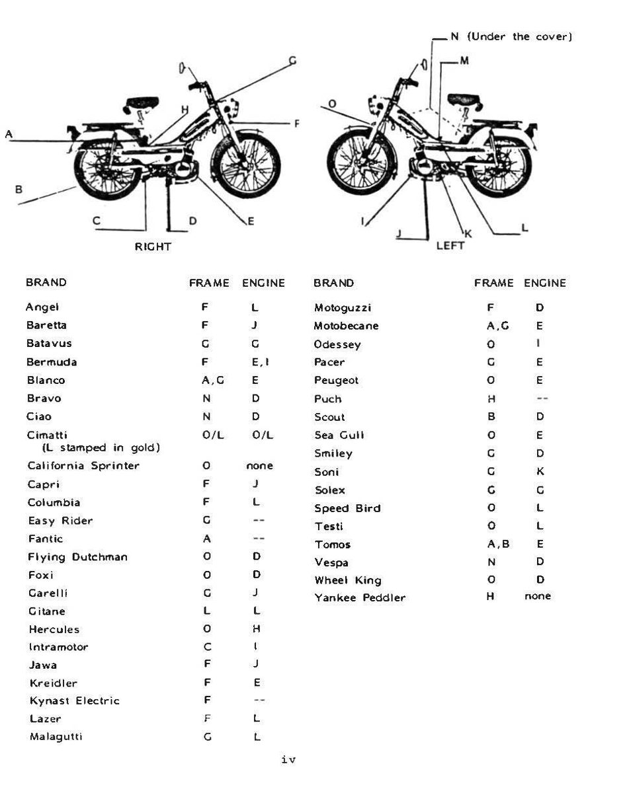

Every motorcycle has a frame number stamped into the frame and an engine number stamped into the engine. On newer bikes the frame number is the 17-character VIN (vehicle identification number). The numbers tell a parts seller exactly which model and year the bike is, and they let you check that a bike matches its papers before you buy it. Read them before you order parts or look up specifications.
Safety
- Let the engine and exhaust cool before you clean around the crankcase.
- Put the bike on its stand on firm ground before you kneel beside it.
You need
- A torch, a rag and degreaser. A small wire brush for dirt, not for the number itself.
- A phone camera to record what you find.
Steps
- Look at the steering head first. On most bikes the frame number is stamped on the right or left side of the steering head (the tube at the front of the frame that holds the forks). Turn the handlebars full lock each way to see both sides.
- Look for a plate as well. Many bikes also carry a riveted or stuck-on plate on the steering head or frame with the VIN, the maker's name and often the month and year of manufacture.
- Find the engine number. It is usually stamped on a flat pad on the crankcase: on the left side below the cylinder, on top of the crankcase behind or below the cylinder, or at the front of the crankcase. On some engines it is on the right side or underneath.
- If you cannot find them, check the other common places in the photo: the down tube below the steering head (left or right side), a frame cross member below the seat and tank, the fork leg near the wheel, or the side of the radiator frame. On mopeds, look on the frame under a side cover and on the engine case.
- Clean gently. Wipe off oil and dirt with degreaser and a rag. Do not grind or file the area: a damaged number can make the bike hard to register.
- Read it in good light. Shine the torch at a low angle across the stamping so the shadows show each character. Photograph it, then write it down exactly, including every letter.
- Compare frame, engine and papers. The frame number must match the registration papers. The engine number may also be listed. On many bikes the start of the engine number matches a model code, so a different engine shows up quickly.
- Use the numbers when buying parts. Give the frame number (and the engine number for engine parts) to the parts seller. Models often change partway through a year, and the number shows which version you have. See Choose where to buy motorcycle parts.
- Use the numbers to find specifications. Model code and year select the right row in a spec table: Read a specification table for your bike.
Check your work
- You have a clear photo and a written copy of both numbers.
- The frame number matches the papers exactly.
If it did not fix the problem
- Numbers ground off, re-stamped, or not matching the papers: do not buy the bike, or ask the local registration office before you do.
- An old or imported bike with no parts listed under its model: Cannot find parts for an old or imported bike.
- Checking a bike before you buy it: Assess a bike that does not run before you buy or restore it.